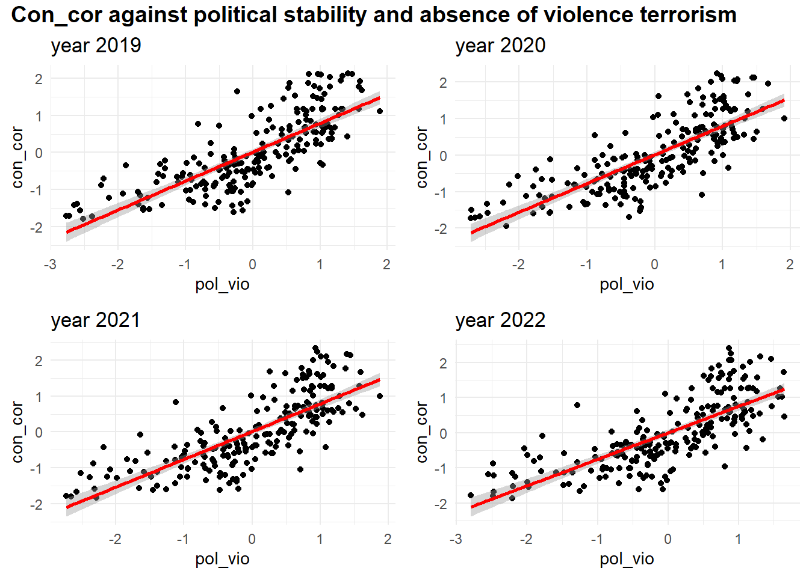
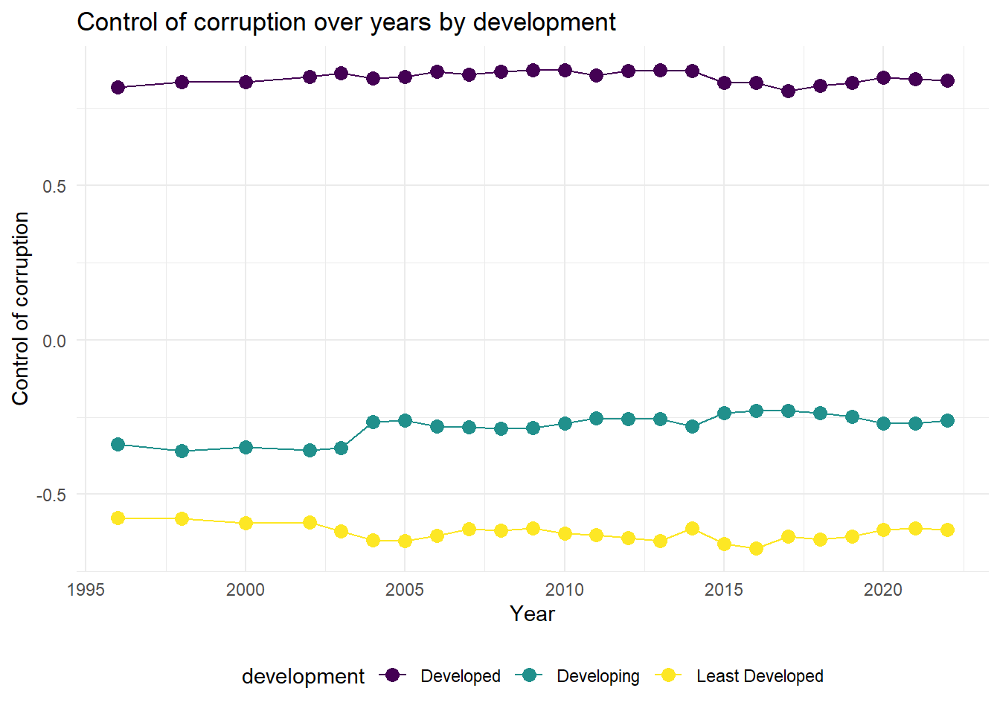
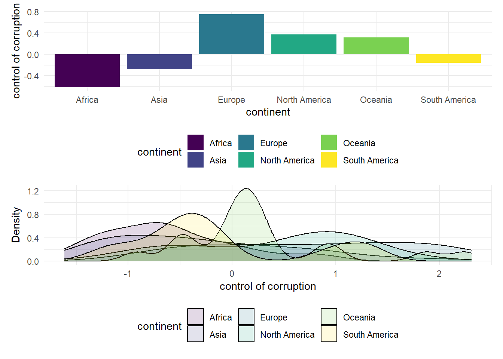
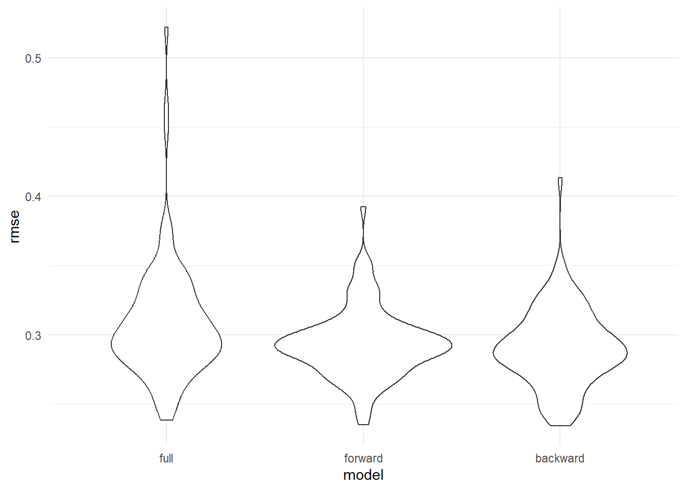

Final Report
2023-12-09
Motivation
“We hang the petty thieves and appoint the great ones to public office.” - Aesop
The Corruption Perceptions Index (CPI) measures the perceived levels of government corruption in different countries.
The government corruption index seems very far away from us, but as socially concerned students, we want to explore some of the subtle and deep factors behind the index and the reasons for regional differences. And by visualizing the results to deepen the understanding of the index for people who see the report.
Data Processing and Cleaning
Source 1:Corruption Index
corruption=read_csv("./data/corruption_index.csv")|>
janitor::clean_names()|>
mutate(value=(as.numeric(x2020_yr2020)+as.numeric(x2020_yr2020)+as.numeric(x2020_yr2020))/3)|>
select(country_name,country_code,series_name,value)|>
pivot_wider(
names_from = "series_name",
values_from = "value"
)|>
janitor::clean_names()We believe that it would be useful to ascertain the officially published data on the corruption index for the last 20 years. This data is provided by The World bank and is public information. World data bank gives estimated scores for countries on the overall corruption indicator. Following this indicator, we also find five indicators Government Effectiveness, Political Stability and Absence of Violence, Regulatory Quality, Rule of Law, Voice and Accountability may be correlated with the Corruption Index. This dataset contains information from 1996 to 2022.
The World data bank dataset was downloaded and read in. The dataset contains data for all indicators from 1996 to 2022 to reflect how they change from year to year. In this dataset, we keep all the variables. To make the data more readable and easier to analyze later, we made the dataset wide and created a new year variable to record year.
Source 2: Country Code
isso_code=
read_html("https://www.countrycode.org/")|>
html_elements("td:nth-child(3)")|>
html_text()
country_name_isso=
read_html("https://www.countrycode.org/")|>
html_elements("td:nth-child(1)")|>
html_text()
country_code=data.frame(country_name_isso,str_split_fixed(isso_code, '/',2))|>
rename(c(country_code_2=X1,country_code_3=X2))|>
mutate(country_code_2=gsub('[ ]','',country_code_2),
country_code_3=gsub('[ ]','',country_code_3))|>
distinct(country_code_3, .keep_all = T)In order to have a better integration of the subsequent data and to avoid unnecessary trouble due to the fact that the names of the countries recorded are different in different datasets. We decided to use the country code to refer to the country.
This dataset is derived from countrycode.org. The data set was not available to download but we were able to scrape it from the website. We read the country name and ISSO code columns and split the ISSO code into country_code_2 and country_code_3.
Sourse 3:GDP
average_GDP=read_csv("./data/GDP.csv")|>
janitor::clean_names()|>
filter(average_gdp!="#DIV/0!")|>
mutate(GDP=as.numeric(average_gdp))|>
select(country_name,country_code,GDP)|>
mutate(GDP=GDP/10^9)
GDP_EDA=
read_csv("./data/GDP.csv")|>
janitor::clean_names()|>
select(country_code,x1996:x2022)|>
pivot_longer(
x1996:x2022,
names_to = "year",
values_to = "GDP"
)|>
mutate(GDP=GDP/10^9,
year=substr(year,2,5))
GDP_per_capita_EDA=
read_csv("./data/GDP_per_capita.csv")|>
janitor::clean_names()|>
select(country_code,x1996:x2022)|>
pivot_longer(
x1996:x2022,
names_to = "year",
values_to = "GDP_per_capita"
)|>
mutate(year=substr(year,2,5))We are also interested in whether there is a correlation between a
country’s level of economic development and the corruption index. This
dataset comes from The World
Bank. This dataset records the GDP of each country from 1960 to
2022. we divide the GDP by \(10^9\) to
make the data more readable. We pivoted this dataset to long format and
created average_GDP for future analysis.
Source 4:Continent
Africa=
read_html("https://www.countrycallingcodes.com/iso-country-codes/africa-codes.php") |>
html_elements("tr+ tr td:nth-child(3) font") |>
html_text()
Asia=
read_html("https://www.countrycallingcodes.com/iso-country-codes/asia-codes.php") |>
html_elements("tr+ tr td:nth-child(3) font") |>
html_text()
Europe=
read_html("https://www.countrycallingcodes.com/iso-country-codes/europe-codes.php") |>
html_elements("tr+ tr td:nth-child(3) font") |>
html_text()|>
append("JEY")
North_America=
read_html("https://www.countrycallingcodes.com/iso-country-codes/north-america-codes.php") |>
html_elements("tr+ tr td:nth-child(3) font") |>
html_text()
South_America=
read_html("https://www.countrycallingcodes.com/iso-country-codes/south-america-codes.php") |>
html_elements("tr+ tr td:nth-child(3) font") |>
html_text()
Oceania=
read_html("https://www.countrycallingcodes.com/iso-country-codes/australia-codes.php") |>
html_elements("tr+ tr td:nth-child(3) font") |>
html_text()
Antarctica=
read_html("https://www.countrycallingcodes.com/iso-country-codes/antarctica-codes.php") |>
html_elements("tr+ tr td:nth-child(3) font") |>
html_text()The geographical location of a country may also have a bearing on a country’s corruption index. Therefore, we decided to find the continent on which each country is located and explore whether it has an impact on the corruption index. This dataset comes from countrycallingcodes.com, where we read the country codes of the countries contained in each continent. The data set was not available to download but we were able to scrape it from the website. In future analyses, we will use this data to match the continent of the country.
Source 5: Development
developed=
read_csv("./data/developed-countries-2023.csv")|>
pull(cca3)
least_develpoed=
read_csv("./data/least-developed-countries-2023.csv")|>
pull(cca3)Countries in the world can be roughly divided into developed countries, developing countries and least developed countries. A country’s corruption index may be related to its state of development. This dataset comes from World Population Review. This dataset records the state of development of countries in 2023.
Source 6: Coordinate
coordinate_html=
read_html("https://developers.google.com/public-data/docs/canonical/countries_csv?hl=en")
country_name=
coordinate_html |>
html_elements("td:nth-child(4)") |>
html_text()
country_code2=
coordinate_html |>
html_elements("td:nth-child(1)") |>
html_text()
latitude=
coordinate_html |>
html_elements("td:nth-child(2)") |>
html_text()
longitude=
coordinate_html |>
html_elements("td:nth-child(3)") |>
html_text()
country_coordinate=
data.frame(country_name,country_code2,latitude,longitude)|>
left_join(country_code,join_by(country_code2==country_code_2))|>
select(country_name,country_code=country_code_3,latitude,longitude)We need the coordinates of the countries for the future EDA session.
This dataset comes from Google
for Developers. Since this dataset records two-digit country codes
and the other datasets use three-digit country codes, we use the
left_join function to match their country codes and keep
only the three-digit country code.
Source 7: Population
average_population=read_csv("./data/population.csv")|>
janitor::clean_names()|>
filter(average_population!="#DIV/0!")|>
mutate(population=as.numeric(average_population))|>
select(country_name,country_code,population)|>
mutate(population=population/(10^7))
population=read_csv("./data/population.csv")|>
janitor::clean_names()|>
select(country_name,country_code,x1996:x2022)|>
pivot_longer(
x1996:x2022,
names_to = "year",
values_to = "population")|>
mutate(year=substr(year,2,5),
population=population/(10^7))We are also interested in whether there is a correlation between a
country’s population and the corruption index. This dataset comes from
The World
Bank. This dataset records the population of each country from 1960
to 2022. We pivoted this dataset to long format and created
average_population for future analysis.
Source 8: CPI
country_code_cpi =
country_code |>
select(-country_code_2) |>
rename("Country / Territory" = country_name_isso,
"Country code" = country_code_3)
numberlist = c("A1:M200", "N1:P200", "Q1:S200", "T1:V200", "W1:Y200", "Z1:AB200", "AC1:AE200", "AF1:AH200", "AI1:AK200", "AL1:AN200", "AO1:AQ200", "AR1:AT200", "AU1:AW200", "AX1:AZ200", "BA1:BC200")
read_cpi =
function(address, scope){
tidy_data =
read_excel(address, sheet = 1, scope)
tidy_data
}
for (i in 1:length(numberlist)){
tidy_data =
read_cpi("./data/Country CPI 1998-2022.xlsx",
numberlist[[i]])
country_code_cpi =
country_code_cpi |>
left_join(tidy_data, by = "Country / Territory")
}
country_code_cpi =
country_code_cpi |>
select("Country / Territory", "Country code.x", contains(c("20", "19"))) |>
janitor::clean_names() |>
rename("country_code" = country_code_x)
names(country_code_cpi) =
gsub("cpi_score_", "", names(country_code_cpi))
country_code_cpi$"2005" = as.numeric(country_code_cpi$"2005")
cols_to_check = as.character(c(1998 : 2022))
country_code_cpi =
country_code_cpi |>
select(sort(names(country_code_cpi))) |>
relocate(country_territory, country_code)|>
mutate_at(vars(c("1998":"2011")), ~ . * 10) |>
filter(!if_all(cols_to_check, is.na))
country_code_cpi |>
write.table(
file = "./data/cleaned_data/cpi_data_year.csv",
sep = ",",
row.names = FALSE)We also recorded the CPI dataset for further EDA session. This dataset comes from Transparency International. The dataset contains the CPI of each countries from 1998 to 2022. In this dataset, we make data arranged by wide format.
Merge Datasets
corruption_data=left_join(corruption,country_code,join_by(country_code==country_code_3))|>
left_join(average_GDP,join_by(country_code==country_code))|>
left_join(country_coordinate,join_by(country_code))|>
left_join(average_population,by=join_by(country_code))|>
mutate(development=case_when(
country_code %in% developed ~ "Developed",
country_code %in% least_develpoed ~ "Least Developed",
(!country_code %in% developed) & (!country_code %in% least_develpoed) ~ "Developing"
))|>
mutate(continent=case_when(
country_code %in% Asia ~ "Asia",
country_code %in% Africa ~ "Africa",
country_code %in% Europe ~ "Europe",
country_code %in% North_America ~ "North America",
country_code %in% South_America ~ "South America",
country_code %in% Oceania ~ "Oceania",
country_code %in% Antarctica ~ "Antarctica"
))|>
select(country_name=country_name.x,country_code,
con_cor=control_of_corruption_estimate,
gov_eff=government_effectiveness_estimate,
pol_vio=political_stability_and_absence_of_violence_terrorism_estimate,
regu_qual=regulatory_quality_estimate,
rul_law=rule_of_law_estimate,
voi_acc=voice_and_accountability_estimate,
GDP,population,latitude,longitude,development,continent)
write.table(corruption_data,"./data/cleaned_data/overall_dataset.csv",row.names=FALSE,col.names=TRUE,sep=",")
corruption_EDA_pre=read_csv("./data/corruption_index.csv")|>
janitor::clean_names()|>
pivot_longer(
cols = x1996_yr1996:x2022_yr2022,
names_to = "year",
values_to = "value"
)|>
mutate(year=substr(year,2,5))|>
select(-series_code)|>
pivot_wider(
names_from = "series_name",
values_from = "value"
)
corruption_EDA=
corruption_EDA_pre|>
left_join(GDP_EDA,by = join_by(country_code, year))|>
left_join(GDP_per_capita_EDA,by = join_by(country_code, year))|>
janitor::clean_names()|>
select(country_name,country_code,year,
con_cor=control_of_corruption_estimate,
gov_eff=government_effectiveness_estimate,
pol_vio=political_stability_and_absence_of_violence_terrorism_estimate,
regu_qual=regulatory_quality_estimate,
rul_law=rule_of_law_estimate,
voi_acc=voice_and_accountability_estimate,
gdp,gdp_per_capita)|>
mutate(continent=case_when(
country_code %in% Asia ~ "Asia",
country_code %in% Africa ~ "Africa",
country_code %in% Europe ~ "Europe",
country_code %in% North_America ~ "North America",
country_code %in% South_America ~ "South America",
country_code %in% Oceania ~ "Oceania",
country_code %in% Antarctica ~ "Antarctica"
))|>
mutate(development=case_when(
country_code %in% developed ~ "Developed",
country_code %in% least_develpoed ~ "Least Developed",
(!country_code %in% developed) & (!country_code %in% least_develpoed) ~ "Developing"
))|>
left_join(country_coordinate,join_by(country_code))|>
left_join(population,join_by(country_code,year))|>
select(country_name=country_name.x,everything(),-country_name.y,-country_name)|>
mutate(con_cor=as.numeric(con_cor),
gov_eff=as.numeric(gov_eff),
pol_vio=as.numeric(pol_vio),
regu_qual=as.numeric(regu_qual),
rul_law=as.numeric(rul_law),
voi_acc=as.numeric(voi_acc),
year=as.numeric(year)
)
write.table(corruption_EDA,"./data/corruption_EDA.csv",row.names=FALSE,col.names=TRUE,sep=",")Since we cleaned the datasets we got, we need to merge these datasets
for our future analysis. Since country_code is the common
variable in every datasets, we use left_join function to
merge these datasets together. For those dataset is not suitable for
left_join, we use case_when function to merge
them into the cleaned dataset. We also need to make sure every variable
in the apporite type. The cleaned dataset include the following
variables:
country_name: Country namescountry_code: Country codesyear: yearcon_cor: Control of corruption
gov_eff: Government effectiveness
pol_vio: Political stability and absence of violence terrorism
regu_qual: Regulatory quality
rul_law: Rule of law
voi_acc: Voice and accountability
gdp:GDP of countries(\(10^9\))gdp_per_capita: GDP per capita of countriescontinent: Continent where the countries are locateddevelopment: Status of development of countrieslatitude: latitudelongitude: longitudepopulation: Population of countries(\(10^7\))
For the dataset we used in regression section, we take the average value of the numeric variables from 2020-2022.
| country_name | country_code | con_cor | gov_eff | pol_vio | regu_qual | rul_law | voi_acc | GDP | population | latitude | longitude | development | continent |
|---|---|---|---|---|---|---|---|---|---|---|---|---|---|
| Afghanistan | AFG | -1.4936998 | -1.6095092 | -2.7026317 | -1.3891630 | -1.8313743 | -1.0776886 | 17.363294 | 4.0066821 | 33.93911 | 67.709953 | Least Developed | Asia |
| Albania | ALB | -0.5729245 | -0.1548803 | 0.0885765 | 0.2219672 | -0.3762492 | 0.0864026 | 17.325132 | 0.2808383 | 41.153332 | 20.168331 | Developing | Europe |
| Algeria | DZA | -0.6664602 | -0.5734335 | -0.8478143 | -1.3553003 | -0.8003030 | -1.0879523 | 167.043000 | 4.4177620 | 28.033886 | 1.659626 | Developing | Africa |
| American Samoa | ASM | 1.2660053 | 0.6328993 | 1.0916016 | 0.5253105 | 1.1194303 | 0.9520435 | 0.712500 | 0.0045166 | -14.270972 | -170.132217 | Developing | Oceania |
| Andorra | AND | 1.2660053 | 1.7494141 | 1.5885718 | 1.3354213 | 1.6162784 | 1.0862534 | 3.189393 | 0.0078853 | 42.546245 | 1.601554 | Developed | Europe |
| Angola | AGO | -0.9386725 | -1.2583939 | -0.6007260 | -0.8568535 | -0.9509994 | -0.8160028 | 74.213601 | 3.4507082 | -11.202692 | 17.873887 | Least Developed | Africa |
| Anguilla | AIA | 0.6324695 | 0.9120280 | 1.5037429 | 0.9303660 | 0.3741581 | NA | NA | NA | 18.220554 | -63.068615 | Developing | North America |
| Antigua and Barbuda | ATG | 0.2385333 | -0.2044867 | 0.9295049 | 0.4976937 | 0.4079735 | 0.7427933 | 1.578157 | 0.0093215 | 17.060816 | -61.796428 | Developing | North America |
| Argentina | ARG | -0.1637807 | -0.2538182 | -0.0720262 | -0.4983443 | -0.4873348 | 0.5852944 | 501.846000 | 4.5806780 | -38.416097 | -63.616672 | Developed | South America |
| Armenia | ARM | -0.0034387 | -0.3046165 | -0.7716423 | 0.2387480 | -0.1258523 | 0.0471597 | 15.335297 | 0.2792350 | 40.069099 | 45.038189 | Developing | Asia |
| Aruba | ABW | 1.1993917 | 1.0752245 | 1.3714974 | 0.9148085 | 1.2702624 | 1.2821430 | 2.868029 | 0.0106522 | 12.52111 | -69.968338 | Developing | North America |
| Australia | AUS | 1.6329559 | 1.5737755 | 0.8616769 | 1.8139470 | 1.6142451 | 1.2980305 | 1518.350000 | 2.5774101 | -25.274398 | 133.775136 | Developed | Oceania |
| Austria | AUT | 1.4777892 | 1.6062636 | 0.8875288 | 1.3952273 | 1.7701634 | 1.3944378 | 462.331000 | 0.8971730 | 47.516231 | 14.550072 | Developed | Europe |
| Azerbaijan | AZE | -1.0770841 | -0.1555638 | -0.8522475 | -0.3360401 | -0.7307201 | -1.5415164 | 58.746490 | 1.0135296 | 40.143105 | 47.576927 | Developing | Asia |
| Bahamas, The | BHS | 1.1062059 | 0.4056442 | 0.8302374 | 0.0013662 | 0.0232638 | 0.9154646 | 11.393200 | 0.0408120 | 25.03428 | -77.39628 | Developed | North America |
| Bahrain | BHR | -0.0935939 | 0.3907681 | -0.6101093 | 0.6148575 | 0.4553994 | -1.4533018 | 39.438677 | 0.1470989 | 25.930414 | 50.637772 | Developed | Asia |
| Bangladesh | BGD | -1.0036772 | -0.7797257 | -0.9158078 | -0.9062135 | -0.5679290 | -0.7695580 | 416.789000 | 16.9321191 | 23.684994 | 90.356331 | Least Developed | Asia |
| Barbados | BRB | 1.1940669 | 0.4440223 | 1.1205775 | 0.4677958 | 0.2966763 | 1.1254591 | 5.051171 | 0.0281176 | 13.193887 | -59.543198 | Developing | North America |
| Belarus | BLR | -0.1339642 | -0.8295090 | -0.8876082 | -0.7998758 | -1.0822419 | -1.4534981 | 67.946320 | 0.9297079 | 53.709807 | 27.953389 | Developed | Europe |
| Belgium | BEL | 1.4459563 | 1.0787830 | 0.5210230 | 1.3436358 | 1.3280041 | 1.2784452 | 566.056000 | 1.1600334 | 50.503887 | 4.469936 | Developed | Europe |
Exploratory Analysis
Import control of corruption data
corruption = read_csv('.\\data\\corruption_EDA.csv')Data Trend
corruption|>
group_by(year)|>
summarise(mean = mean(signif(con_cor,4),na.rm = TRUE))|>
ggplot(aes(x=year, y=mean)) +
geom_point(color = 'red')+geom_line(aes(group=1),color = 'orange')+
geom_smooth(se = FALSE,color = "purple")+
labs(
title = " Trend of control of corruption",
x = "Year",
y = "Control of corruption"
)We draw a line plot with a smooth line to show the overall trend of control of corruption from 1996 to 2022. We can see from the plot, that there is a increasing trend for the control of corruption index from 1996 to 2007,and then declining trend from 2007 to 2015. From 2015 to 2022, there is a increasing trend for the control of corruption. In general, there is a increasing trend for control of corruption from 1996 to 2022.
With Governance Indicators
corruption %>%
select(con_cor,gov_eff,pol_vio,regu_qual,rul_law,voi_acc
) %>%
ggpairs(
title = "Correlations Between govenance indicators",
ggplot2::aes(alpha = 0.1)
) +
scale_fill_discrete() +
theme(axis.text.x = element_text(angle = 90, vjust = 0.5, hjust=1))We also managed to show how control of corruption relate to other 5 types of governance indicator. The plot shows that the control of corruption has most significant correlation(bigger than 0.90) with government effectiveness and rule of law.
Then we make scatter plots of control of corruption and fit it with linear line against each of 5 types of governance indicators to visualize the relationship.
Level - 1
myplots <- vector('list', 4)
for (i in 2019:2022){
myplots[[i-2018]] =
corruption %>%
filter(year == i) %>%
ggplot(aes(x = gov_eff, y = con_cor))+geom_point()+geom_smooth(method = 'lm', se = TRUE, color = 'red')+labs(title = sprintf("year %s", i))
plot_row1 <- plot_grid(myplots[[1]], myplots[[2]])
plot_row2 <- plot_grid(myplots[[3]], myplots[[4]])
}
# title
title <- ggdraw() +
draw_label(
"Control of corruption against effectiveness",
fontface = 'bold',
x = 0,
hjust = 0
) +
theme(
# add margin on the left of the drawing canvas,
# so title is aligned with left edge of first plot
plot.margin = ggplot2::margin(0, 0, 0, 7)
)
plot_grid(title,plot_row1,plot_row2 ,ncol=1, label_size = 12,rel_heights=c(0.1, 1,1))Level - 2
myplots <- vector('list', 4)
for (i in 2019:2022){
myplots[[i-2018]] =
corruption %>%
filter(year == i) %>%
ggplot(aes(x = pol_vio, y = con_cor))+geom_point()+geom_smooth(method = 'lm', se = TRUE, color = 'red')+labs(title = sprintf("year %s", i))
}
plot_row1 <- plot_grid(myplots[[1]], myplots[[2]])
plot_row2 <- plot_grid(myplots[[3]], myplots[[4]])
# title
title <- ggdraw() +
draw_label(
"Con_cor against political stability and absence of violence terrorism",
fontface = 'bold',
x = 0,
hjust = 0
) +
theme(
# add margin on the left of the drawing canvas,
# so title is aligned with left edge of first plot
plot.margin = ggplot2::margin(0, 0, 0, 7)
)
plot_grid(title,plot_row1,plot_row2 ,ncol=1, label_size = 12,rel_heights=c(0.1, 1,1))
Level - 3
myplots <- vector('list', 4)
for (i in 2019:2022){
myplots[[i-2018]] =
corruption %>%
filter(year == i) %>%
ggplot(aes(x = regu_qual, y = con_cor))+geom_point()+geom_smooth(method = 'lm', se = TRUE, color = 'red')+labs(title = sprintf("year %s", i))
}
plot_row1 <- plot_grid(myplots[[1]], myplots[[2]])
plot_row2 <- plot_grid(myplots[[3]], myplots[[4]])
# title
title <- ggdraw() +
draw_label(
"Control of corruption against regulatory_quality",
fontface = 'bold',
x = 0,
hjust = 0
) +
theme(
# add margin on the left of the drawing canvas,
# so title is aligned with left edge of first plot
plot.margin = ggplot2::margin(0, 0, 0, 7)
)
plot_grid(title,plot_row1,plot_row2 ,ncol=1, label_size = 12,rel_heights=c(0.1, 1,1))Level - 4
myplots <- vector('list', 4)
for (i in 2019:2022){
myplots[[i-2018]] =
corruption %>%
filter(year == i) %>%
ggplot(aes(x = rul_law
, y = con_cor))+geom_point()+geom_smooth(method = 'lm', se = TRUE, color = 'red')+labs(title = sprintf("year %s", i))
}
plot_row1 <- plot_grid(myplots[[1]], myplots[[2]])
plot_row2 <- plot_grid(myplots[[3]], myplots[[4]])
# title
title <- ggdraw() +
draw_label(
"Control of corruption against rule of law",
fontface = 'bold',
x = 0,
hjust = 0
) +
theme(
# add margin on the left of the drawing canvas,
# so title is aligned with left edge of first plot
plot.margin = ggplot2::margin(0, 0, 0, 7)
)
plot_grid(title,plot_row1,plot_row2 ,ncol=1, label_size = 12,rel_heights=c(0.1, 1,1))Level - 5
myplots <- vector('list', 4)
for (i in 2019:2022){
myplots[[i-2018]] =
corruption %>%
filter(year == i) %>%
ggplot(aes(x = voi_acc
, y = con_cor))+geom_point()+geom_smooth(method = 'lm', se = TRUE, color = 'red')+labs(title = sprintf("year %s", i))
}
plot_row1 <- plot_grid(myplots[[1]], myplots[[2]])
plot_row2 <- plot_grid(myplots[[3]], myplots[[4]])
# title
title <- ggdraw() +
draw_label(
"control of corruption against voice and accountability",
fontface = 'bold',
x = 0,
hjust = 0
) +
theme(
# add margin on the left of the drawing canvas,
# so title is aligned with left edge of first plot
plot.margin = ggplot2::margin(0, 0, 0, 7)
)
plot_grid(title,plot_row1,plot_row2 ,ncol=1, label_size = 12,rel_heights=c(0.1, 1,1))With Corruption by Development
Scatter Plot
corruption|>
group_by(year,development)|>
summarize(mean_cpi = mean(signif(con_cor,4),na.rm = TRUE))|>
ggplot(aes(x = year,y = mean_cpi, group = development,color = development)) +
geom_point(shape=19,size = 3)+geom_line()+
labs(
title = "Control of corruption over years by development",
x = "Year",
y = "Control of corruption")
From the plot,We can see that the control of corruption for developing countries is getting better from 1996 to 2022 in general.For least developed countries, the control of corruption rate drops from 2002 to 2005 and then keeps fluctuation.For developed countries, the control of corruption index goes up from 1996 to 2014, and then falls.
Pie Plot
development_prop = corruption|>
group_by(development)|>
summarize(count = n_distinct(country_name))
myPalette <- brewer.pal(3, "Set2")
pie(pull(development_prop,count) , labels = c("Developed","Developing","Least Developed"), border="white", col=myPalette )
We have a pie plot for proportion of population by development.From the pie plot, we can read that developing countries account for the largest proportion. Developed countries is the second, and least developed countries is the third.
Together with the last plot, we can attribute the rising trend of control of corruption index over the world to rising trend of developing countries. The rising trend of developing countries outweigh the falling trend of least developed countries.
With Corruption by Continents
Continent is also a import factor we need to consider.We compares the population,gdp and control of corruption among continents by a series of plots.
mean_cpi = corruption|>
group_by(continent)|>
summarize(mean_cpi = mean(con_cor,na.rm=TRUE))|>
ggplot(aes(x = continent,y = mean_cpi,fill = continent))+
geom_bar(stat='identity')+
labs(
y = 'control of corruption'
)
cpi_density =
corruption|>
filter(year == 2022) |>
group_by(continent)|>
ggplot(
aes(
x = con_cor
)
) +
geom_density(aes(fill = continent), alpha = 0.15) +
labs(
x = "control of corruption",
y = "Density"
)
cpi_continent = mean_cpi/cpi_density
cpi_continent
We draw a bar plot of mean control of corruption index by continents and a density plot to show the distribution of control of corruption index. From the histogram, we can see that Europe has the highest control of corruption index, whereas Africa has the lowest one.
With GDP
mean_gdp = corruption|>
group_by(continent)|>
summarize(gdp = mean(gdp,na.rm=TRUE))|>
ggplot(aes(x = continent,y = gdp,fill = continent))+
geom_bar(stat='identity')
gdp_density = corruption|>
filter(year == 2022) |>
group_by(continent)|>
ggplot(
aes(
x = gdp
)
) +
geom_histogram(aes(fill = continent), alpha = 0.5) +
labs(
x = "mean gdp",
y = "Density"
)
gdp_continent = mean_gdp/gdp_density
gdp_continentThe upper bar plot shows mean gdp of countries in each continent.The lower histogram plot shows the distribution of gdp in each continent. We can get that North America has the highest mean gdp, and Africa has the lowest mean gdp.
With Population
Plot - 1
corruption %>%
ggplot( aes(x=continent, y=population, fill=continent)) +
geom_boxplot() +
scale_fill_viridis(discrete = TRUE, alpha=0.6) +
geom_jitter(color="red", size=0.4, alpha=0.9) +
theme_ipsum() +
theme(
legend.position="none",
plot.title = element_text(size=11)
) +
ggtitle("Population among continents") +
ylab("Population")+
xlab("Continent")Based on the boxplot of population distribution among countries in each continent, we can read that Asia is the most populated area, and populated countries in North America has larger population than those countries in Europe. Oceania are the least populated area.
Plot - 2
myplots <- vector('list', 4)
for (i in 2019:2022){
myplots[[i-2018]] =
corruption %>%
filter(year == i) %>%
ggplot(aes(x = gdp_per_capita
, y = con_cor))+geom_point(color = 'purple')+geom_smooth(method = 'lm', se = FALSE, color = 'pink'
)+labs(title = sprintf("year %s", i))+ xlab("GDP per capita")
}
plot_row1 <- plot_grid(myplots[[1]], myplots[[2]])
plot_row2 <- plot_grid(myplots[[3]], myplots[[4]])
# title
title <- ggdraw() +
draw_label(
"Corruption against GDP per capita",
fontface = 'bold',
x = 0,
hjust = 0
) +
theme(
# add margin on the left of the drawing canvas,
# so title is aligned with left edge of first plot
plot.margin = ggplot2::margin(0, 0, 0, 7)
)
plot_grid(title,plot_row1,plot_row2 ,ncol=1, label_size = 12,rel_heights=c(0.1, 1,1))In addition, we also draw a scatter plot to check the relationship between control of corruption and GDP per capita.We can read that control of corruption is positively proportional to GDP per capita. However, when GDP per capita is high, the control of corruption keeps stable and does not follow the rising trend of GDP per capita.
Regression Analysis
Introduction
In this part, linear regression models are generated to help us to have a better understanding of the relationship between corruption index and other variables. After data cleaning, all variables and the number of missing data are shown below.
overall_dataset = read.csv("data/cleaned_data/overall_dataset.csv")NA_table_1 =
overall_dataset|>
is.na()|>
colSums()
NA_table_1|>
knitr::kable(col.names = c("Counts of NA"))| Counts of NA | |
|---|---|
| country_name | 0 |
| country_code | 0 |
| con_cor | 3 |
| gov_eff | 3 |
| pol_vio | 1 |
| regu_qual | 3 |
| rul_law | 3 |
| voi_acc | 6 |
| GDP | 14 |
| population | 9 |
| latitude | 3 |
| longitude | 3 |
| development | 0 |
| continent | 0 |
overall_dataset =
overall_dataset|>
drop_na()|>
dplyr::select(-country_name, -latitude, -longitude,-country_code)Full model
full.model = lm(con_cor ~ ., data = overall_dataset)
empty.model = lm(con_cor ~ 1,data = overall_dataset)The full model includes all variables except latitude and longitude since continent is included as location information. This model is treated as the baseline to compare with model after selection.
Tables below show summary information of the full model. The p-value for government_effectiveness, rule_of_law, voice_and_accountability, continentEurope have p-value lower than any reasonable significance level(1%, 5%, 10%), which means these variable are more significant than other in this model. The R2adj for this model is 0.8983053, which presents a very high proportion of variance in response variable explained the linear relationship between with predictors and response variable.
All.Criteria = function(the.model){
tibble(
the.BIC = BIC(the.model),
the.LL = logLik(the.model),
the.AIC = AIC(the.model),
the.PRESS = PRESS(the.model),
the.R2adj = summary(the.model)$adj.r.squared,
)
}
full.model|>
broom::tidy()|>
dplyr::select(term, estimate, p.value)|>
knitr::kable(caption ="Estimate and P-value for full model")| term | estimate | p.value |
|---|---|---|
| (Intercept) | 0.1405094 | 0.0993719 |
| gov_eff | 0.4658574 | 0.0000001 |
| pol_vio | 0.0200257 | 0.6618070 |
| regu_qual | -0.0512946 | 0.4923111 |
| rul_law | 0.4528029 | 0.0000004 |
| voi_acc | 0.1649606 | 0.0008278 |
| GDP | 0.0000044 | 0.7551193 |
| population | -0.0027533 | 0.1800214 |
| developmentDeveloping | -0.0875213 | 0.2492473 |
| developmentLeast Developed | 0.0358069 | 0.7219710 |
| continentAsia | -0.1084208 | 0.1614065 |
| continentEurope | -0.2158619 | 0.0205606 |
| continentNorth America | -0.1440205 | 0.1287667 |
| continentOceania | -0.0219779 | 0.8378814 |
| continentSouth America | -0.0800786 | 0.4969813 |
All.Criteria(full.model)|>
knitr::kable(caption = "Criterias for full model")| the.BIC | the.LL | the.AIC | the.PRESS | the.R2adj |
|---|---|---|---|---|
| 170.5324 | -42.96004 | 117.9201 | 22.12111 | 0.8987517 |
check normality and remove outlier
Plots below shows that the residuals are overall normally distributed. The qq-plot shows that the regression is linear and there is no need to add transformation variables. But potential outliers are presented. Then, outliers are detected and removed by using cutoffs based on t-distribution. With data after removing outliers, the full model is updated, and BIC and AIC are all decreased, which indicate a better balance between explaining the data and avoiding overfitting.
SR = stdres(full.model)
n = length(full.model$residuals)
p = length(full.model$coefficients)
alpha = 0.01
t.cutoff = qt(1- alpha/2, n-p)
par(mfrow=c(2,2))
plot(full.model)outliers = which(abs(SR)>t.cutoff)
outliers|>
knitr::kable(caption = "outliers")| x | |
|---|---|
| 18 | 18 |
| 22 | 22 |
| 158 | 158 |
| 181 | 181 |
new.data = overall_dataset[-outliers,]
full.model = lm(con_cor ~ ., data = new.data)
All.Criteria(full.model)|>
knitr::kable(caption ="Estimate and P-value for updated full model")| the.BIC | the.LL | the.AIC | the.PRESS | the.R2adj |
|---|---|---|---|---|
| 124.7907 | -20.25249 | 72.50499 | 17.67333 | 0.9186777 |
Selected model
After the updated full model is built, backward and forward selection function is applied to gain selected models.
backward model selection
The summary of backward selected model is shown below. pol_vio, regu_qual, GDP are deleted. This is expected because these variables have relatively high p-value that presented in full model above.
backward.model.AIC = stepAIC(full.model, scope = list(lower = empty.model, upper= full.model), k = 2,direction = "backward",trace = FALSE)
forward.model.AIC = stepAIC(empty.model, scope = list(lower = empty.model, upper= full.model), k = 2,direction = "forward",trace = FALSE)backward.model.AIC|>
broom::tidy()|>
dplyr::select(term, estimate, p.value)|>
knitr::kable(caption ="Estimate and P-value for backward selected model")| term | estimate | p.value |
|---|---|---|
| (Intercept) | 0.1360034 | 0.0668905 |
| gov_eff | 0.4338981 | 0.0000000 |
| rul_law | 0.4574146 | 0.0000000 |
| voi_acc | 0.1639242 | 0.0001597 |
| population | -0.0020295 | 0.1548008 |
| developmentDeveloping | -0.0830818 | 0.2107660 |
| developmentLeast Developed | 0.0155433 | 0.8595612 |
| continentAsia | -0.1376894 | 0.0482038 |
| continentEurope | -0.2462142 | 0.0034882 |
| continentNorth America | -0.1360832 | 0.0925339 |
| continentOceania | 0.0645921 | 0.4889771 |
| continentSouth America | -0.0793981 | 0.4483360 |
All.Criteria(backward.model.AIC)|>
knitr::kable(caption = "Criterias for backward selected selected model")| the.BIC | the.LL | the.AIC | the.PRESS | the.R2adj |
|---|---|---|---|---|
| 109.1065 | -20.31216 | 66.62433 | 16.12417 | 0.919969 |
forward model selection
The summary of forward selected model is shown below. pol_vio, GDP, continent are deleted. Comparing to backward selected model, continent is also deleted instead of regu_qual.The possible reason is that forward selection may be more sensitive to the order in which variable are added; on the other hand, backward selection tends to be more stable and less dependent on the order of variable removal.
forward.model.AIC|>
broom::tidy()|>
dplyr::select(term, estimate, p.value)|>
knitr::kable(caption ="Estimate and P-value for forward selected model")| term | estimate | p.value |
|---|---|---|
| (Intercept) | -0.0092939 | 0.8550218 |
| rul_law | 0.4944472 | 0.0000000 |
| gov_eff | 0.4731432 | 0.0000000 |
| voi_acc | 0.1582462 | 0.0000360 |
| developmentDeveloping | -0.0281897 | 0.6759664 |
| developmentLeast Developed | 0.1464242 | 0.0937479 |
| population | -0.0027154 | 0.0879449 |
| regu_qual | -0.0954539 | 0.1661501 |
All.Criteria(forward.model.AIC)|>
knitr::kable(caption = "Criterias for forward selected selected model")| the.BIC | the.LL | the.AIC | the.PRESS | the.R2adj |
|---|---|---|---|---|
| 140.8401 | -46.62285 | 111.2457 | 20.37547 | 0.8988063 |
Comparision of full model, forward and backward selected model
Backward selected model has the lowest BIC and highest R2adj. Interestingly, forward selected model has the lower than BIC and R2adj than unselected full model, which indicated that continentEurope has unexcepted significance in the whole model.
forward_model = All.Criteria(forward.model.AIC)|>
mutate(the.LL = as.double(the.LL))
backward_model = All.Criteria(backward.model.AIC)|>
mutate(the.LL = as.double(the.LL))
full_model = All.Criteria(full.model)|>
mutate(the.LL = as.double(the.LL))
comparsion =
bind_rows( full_model,forward_model, backward_model)|>
mutate(model = c('full', 'forward', 'backward'))|>
dplyr::select(model, everything())|>
knitr::kable(caption = "Comparision of full model, forward and backward selected model")
comparsion| model | the.BIC | the.LL | the.AIC | the.PRESS | the.R2adj |
|---|---|---|---|---|---|
| full | 124.7907 | -20.25249 | 72.50499 | 17.67333 | 0.9186777 |
| forward | 140.8401 | -46.62285 | 111.24569 | 20.37547 | 0.8988063 |
| backward | 109.1065 | -20.31216 | 66.62433 | 16.12417 | 0.9199690 |
Then, the dataset is divided into train and test datasets 100 times. The graph below shows the RMSE distribution in test datasets for three models. From the plot, forward and backward selected model have RMSE around 0.2 to 0.4. However, the RMSE of full model is over-spread. The interference of GDP and pol_vio could lead to the result.
Test the model
cv_df =
crossv_mc(new.data, 100) |>
mutate(
train = map(train, as_tibble),
test = map(test, as_tibble))cv_df =
cv_df |>
mutate(
model_full = map(train, \(df) lm(con_cor ~ ., data = df)),
model_forward = map(train, \(df) lm(con_cor ~ rul_law + gov_eff + voi_acc + development + population + regu_qual, data = df)),
model_backward = map(train, \(df) lm(con_cor ~ rul_law + gov_eff + voi_acc + development + population + continent, data = df)))|>
mutate(
rmse_full = map2_dbl(model_full, test, \(mod, df) rmse(model = mod, data = df)),
rmse_forward = map2_dbl(model_forward, test, \(mod, df) rmse(model = mod, data = df)),
rmse_backward = map2_dbl(model_backward, test, \(mod, df) rmse(model = mod, data = df)))cv_df |>
dplyr::select(starts_with("rmse")) |>
pivot_longer(
everything(),
names_to = "model",
values_to = "rmse",
names_prefix = "rmse_") |>
mutate(model = fct_inorder(model)) |>
ggplot(aes(x = model, y = rmse)) + geom_violin()
The graphs below show the Prediction VS Actual for three models. Overall, there is no significant difference between three models.
new.data|>
modelr::add_predictions(full.model)|>
ggplot(aes(x = con_cor, y = pred)) +
geom_point() +
geom_abline(intercept = 0, slope = 1, color = "blue") +
labs(
title = "Full model :Prediction V.S. Actual corruption_index",
x = "Actual corruption_index",
y = "Prediction"
)
new.data|>
modelr::add_predictions(forward.model.AIC)|>
ggplot(aes(x = con_cor, y = pred)) +
geom_point() +
geom_abline(intercept = 0, slope = 1, color = "blue") +
labs(
title = "Forward selected model: Prediction V.S. Actual corruption_index",
x = "Actual corruption_index",
y = "Prediction"
)
new.data|>
modelr::add_predictions(backward.model.AIC)|>
ggplot(aes(x = con_cor, y = pred)) +
geom_point() +
geom_abline(intercept = 0, slope = 1, color = "blue") +
labs(
title = "Backward selected model: Prediction V.S. Actual corruption_index",
x = "Actual corruption_index",
y = "Prediction"
)Conclusions
To sum up, based on all analysis above, there is no significant difference between three models. But backward selected model is the most optimal model to predict corruption index.
Discussion
Through our group’s research, we discovered that there are certain patterns in the geographic distribution of the Government Integrity Index. Notably, European countries generally have a higher Integrity Index compared to other nations. In exploring the factors influencing the Corruption Perceptions Index (CPI) using models, we found that government administration, the establishment of legal norms, and being located in Europe have the most significant positive impact on the CPI. Surprisingly, we observed that GDP has almost no impact on the CPI, indicating that a country’s GDP level does not affect the overall integrity of its government. This unexpected finding prompts us to delve deeper into the reasons behind it. For more details about our research, we invite readers to explore further in our report.
Limitations
In our project, the initial challenge was managing and merging datasets from different sources with varying data formats. This required extensive data cleaning and standardization, including the introduction of country codes to harmonize the disparate naming conventions for countries. When visualizing trends, such as in the control of corruption, we encountered difficulties using histograms or bar plots due to minimal differences between data points. Switching to line plots, however, revealed a clear rising trend. Learning and applying new visualization methods, like pie plots and 3D plots (using tools like Plotly), was also a significant challenge, especially when these methods were not always suitable for the data relationships we wanted to showcase.
The process of learning Shiny was complex but interesting, initially posing some difficulties for our team. However, we managed to master the technology through learning from relevant websites and applied it effectively in this assignment.
The creation of our project’s webpage brought its own set of challenges, particularly in making it aesthetically pleasing. We spent considerable time searching for images and icons that matched the theme of our webpage and struggled with linking the analyzed data to corresponding sections effectively. This often led to frustration when links did not open as intended. Another critical aspect was recording a video to demonstrate our project, which required a deep understanding of every project component, such as the regression models used and the conclusions drawn from them. This comprehensive approach was crucial to effectively communicate our findings and the process behind them.